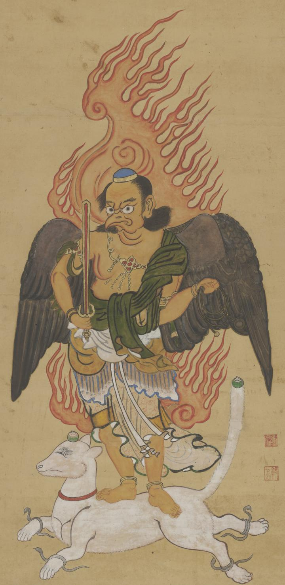

火炎を背にして、手足に蛇を巻いた白い狐に乗る秋葉権現。黒い翼にくちばしと烏天狗のような風貌で、手には剣と黒縄を持っている。
出典：親書誌：U426_nichibunken_0285：[秋葉権現図]／日付：2014／資源識別子：U426_nichibunken_0285_0001_0000
Copyright (c)2010- International Research Center for Japanese Studies, Kyoto, Japan. All rights reserved.